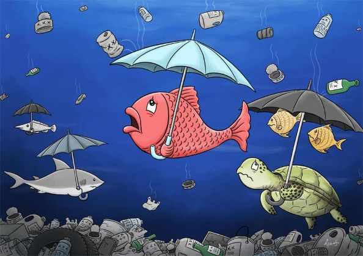

Home | Research
Categories of Water Pollution
1. Groundwater
When rain falls and seeps deep into the earth, filling the cracks, crevices, and porous spaces of an aquifer (basically an underground storehouse of water), it becomes groundwater—one of our least visible but most important natural resources. Nearly 40 percent of Americans rely on groundwater, pumped to the earth’s surface, for drinking water. For some folks in rural areas, it’s their only freshwater source. Groundwater gets polluted when contaminants—from pesticides and fertilizers to waste leached from landfills and septic systems—make their way into an aquifer, rendering it unsafe for human use. Ridding groundwater of contaminants can be difficult to impossible, as well as costly. Once polluted, an aquifer may be unusable for decades, or even thousands of years. Groundwater can also spread contamination far from the original polluting source as it seeps into streams, lakes, and oceans.
2.Surface water
Covering about 70 percent of the earth, surface water is what fills our oceans, lakes, rivers, and all those other blue bits on the world map. Surface water from freshwater sources (that is, from sources other than the ocean) accounts for more than 60 percent of the water delivered to American homes. But a significant pool of that water is in peril. According to the most recent surveys on national water quality from the U.S. Environmental Protection Agency, nearly half of our rivers and streams and more than one-third of our lakes are polluted and unfit for swimming, fishing, and drinking.
3.Ocean water
Eighty percent of ocean pollution (also called marine pollution) originates on land—whether along the coast or far inland. Contaminants such as chemicals, nutrients, and heavy metals are carried from farms, factories, and cities by streams and rivers into our bays and estuaries; from there they travel out to sea. Meanwhile, marine debris—particularly plastic—is blown in by the wind or washed in via storm drains and sewers. Our seas are also sometimes spoiled by oil spills and leaks—big and small—and are consistently soaking up carbon pollution from the air. The ocean absorbs as much as a quarter of man-made carbon emissions.
4.Point source
When contamination originates from a single source, it’s called point source pollution. Examples include wastewater (also called effluent) discharged legally or illegally by a manufacturer, oil refinery, or wastewater treatment facility, as well as contamination from leaking septic systems, chemical and oil spills, and illegal dumping. The EPA regulates point source pollution by establishing limits on what can be discharged by a facility directly into a body of water. While point source pollution originates from a specific place, it can affect miles of waterways and ocean.

By Hao Yanpeng | China Daily | Updated: 2019-07-15 07:31
.png)